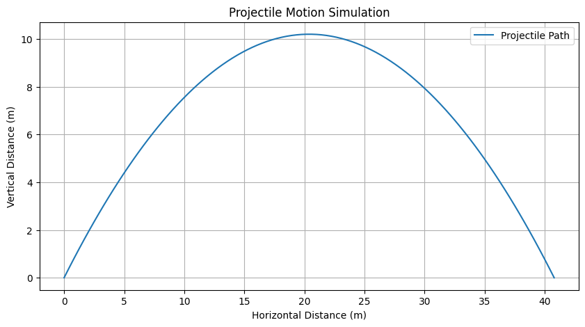
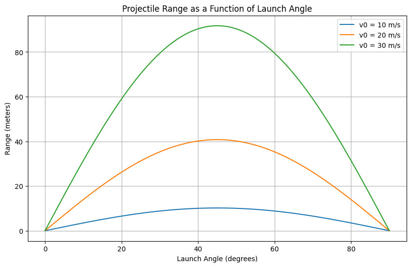

Problem 1
Mechanics
Problem 1: Investigating the Range as a Function of the Angle of Projection
1. Theoretical Foundation
To derive the governing equations of motion for a projectile, we start with Newton’s second law in a vacuum (no air resistance). The motion occurs in two dimensions: horizontal (x) and vertical (y). The only force acting is gravity, with acceleration $ g $, directed downward.
Equations of Motion
- Horizontal motion: No acceleration, so:
$$ x(t) = v_0 \cos(\theta) \cdot t $$
where \(v_0\) is the initial velocity, \(\theta\) is the angle of projection, and \(t\) is time. - Vertical motion: Acceleration is $ -g $, so: $$ y(t) = v_0 \sin(\theta) \cdot t - \frac{1}{2} g t^2 $$

Solving for Time of Flight
The projectile returns to the ground when $ y(t) = 0 $:
$$ 0 = v_0 \sin(\theta) \cdot t - \frac{1}{2} g t^2 $$ Factorizing: $$ t \left( v_0 \sin(\theta) - \frac{1}{2} g t \right) = 0 $$ Solutions: $ t = 0 $ (launch) or: $$ t = \frac{2 v_0 \sin(\theta)}{g} $$ This is the time of flight.
Range Equation
Substitute the time of flight into the horizontal equation: $$ R = x\left(\frac{2 v_0 \sin(\theta)}{g}\right) = v_0 \cos(\theta) \cdot \frac{2 v_0 \sin(\theta)}{g} = \frac{2 v_0^2 \sin(\theta) \cos(\theta)}{g} $$ Using the trigonometric identity $ \sin(2\theta) = 2 \sin(\theta) \cos(\theta) $: $$ R = \frac{v_0^2 \sin(2\theta)}{g} $$ This is the range as a function of the angle of projection. Different initial conditions ($ v_0 $, $ g $) yield a family of solutions, scaling the range accordingly.

2. Analysis of the Range
The range \(R\) depends on \(\theta\) through \(\sin(2\theta)\): - \(R\) is maximized when \(\sin(2\theta) = 1\) , i.e., \ \(2\theta = 90^\circ\), so \(\theta = 45^\circ\). - $ R = 0 $ when $ \sin(2\theta) = 0 $, i.e., $ \theta = 0^\circ $ or $ 90^\circ $. - The relationship is symmetric about $ 45^\circ $ (e.g., $ \theta = 30^\circ $ and $ 60^\circ $ give the same range).
Influence of Other Parameters
- Initial Velocity ($ v_0 $): $ R \propto v_0^2 $, so doubling $ v_0 $ quadruples the range.
- Gravitational Acceleration ($ g $): $ R \propto 1/g $, so a smaller $ g $ (e.g., on the Moon) increases the range.
3. Practical Applications
This model assumes a flat surface and no air resistance, but it can be adapted: - Uneven Terrain: Adjust the landing height in the vertical equation, solving for $ t $ when $ y(t) = h $. This complicates the range formula. - Air Resistance: Introduce a drag force proportional to velocity (e.g., $ F_d = -k v $), turning the equations into nonlinear differential equations, typically solved numerically. - Real-World Examples: Artillery, sports (e.g., golf, soccer), or space launches (with modified $ g $).
import numpy as np import matplotlib.pyplot as plt
Constants
g = 9.81 # gravitational acceleration (m/s^2)
Function to calculate range
def calculate_range(v0, theta_deg): theta_rad = np.radians(theta_deg) # Convert degrees to radians R = (v0**2 * np.sin(2 * theta_rad)) / g return R
Angles from 0 to 90 degrees
theta = np.linspace(0, 90, 181) # 181 points for smooth curve
Different initial velocities
v0_values = [10, 20, 30] # m/s
Plotting
plt.figure(figsize=(10, 6)) for v0 in v0_values: R = calculate_range(v0, theta) plt.plot(theta, R, label=f'v0 = {v0} m/s')
Formatting the plot
plt.title('Range vs Angle of Projection') plt.xlabel('Angle of Projection (degrees)') plt.ylabel('Range (meters)') plt.grid(True) plt.legend() plt.show()